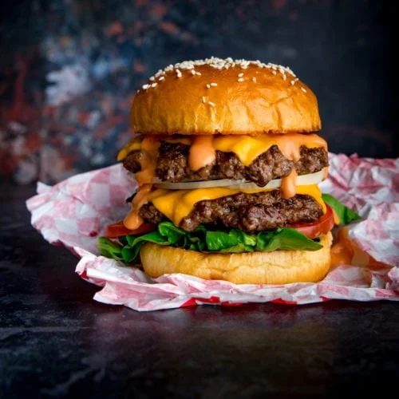

Burger

Welcome, food enthusiasts! Today, I'm thrilled to share with you an extraordinary cheeseburger recipe that will make your taste buds sing with delight. Start with a juicy, perfectly seasoned beef patty, grilled to perfection. Nestle that delightful patty between a soft, toasted brioche bun,
slathered with a creamy spread of tangy mayo mixed with a hint of Dijon mustard. Next, add a generous slice of sharp cheddar cheese that melts seductively over the patty, creating a gooey, irresistible blanket of flavor. Top it all off with crisp lettuce, ripe tomato slices, and a few zesty pickles for that satisfying crunch. With each bite.
You'll experience a symphony of flavors, from the smoky beef to the rich creaminess of the cheese,
all perfectly balanced with the freshness of the vegetables. This cheeseburger is the epitome of comfort and indulgence, a true masterpiece that will leave you craving more. Get ready to embark on a mouthwatering adventure that will redefine your love for this classic American delight!
Ingredients
- Ground beef (80/20 blend is recommended)
- Brioche buns (or your preferred burger buns)
- Sharp cheddar cheese slices
- Mayonnaise
- Dijon mustard
- Lettuce leaves
- Tomato slices
- Pickles
- Salt and pepper (for seasoning)
- Cooking oil (for grilling the patties)
Steps
- Preheat your grill or stovetop pan over medium-high heat.
- In a mixing bowl, season the ground beef with salt and pepper to taste. Gently mix the seasoning into the meat, being careful not to overwork it.
- Divide the seasoned beef into equal portions and shape them into patties slightly larger than the size of your buns, as they will shrink during cooking.
- Place the patties on the preheated grill or pan and cook for approximately 4-5 minutes on each side, or until they reach your desired level of doneness.
- While the patties are cooking, prepare the bun. Slice the brioche buns in half and lightly toast them on the grill or in a toaster until they are golden brown.
- In a small bowl, mix together the mayonnaise and Dijon mustard to create a tangy spread.
- Once the patties are cooked to your liking, place a slice of sharp cheddar cheese on top of each patty. Allow it to melt slightly from the residual heat.
- Spread the mayo-mustard mixture on the bottom half of each toasted bun.
- Assemble the cheeseburgers by placing a patty with melted cheese on top of the spread.
- Top the patty with lettuce leaves, tomato slices, and a few pickles.
- Finally, place the top half of the bun on the assembled burger.
- Serve the cheeseburgers immediately while they are still warm and enjoy!